Precalculus – Unit 04: Trigonometry
Essential Standard
Learning Target: Students will use the unit circle to determine exact trigonometric values in radians.
- I can draw special angles on the unit circle using radian measure.
- I can determine exact values of sine, cosine, and tangent using the unit circle.
- I can use unit circle coordinates to find exact values of all six trigonometric functions.
Learning Target: Students will apply sum, difference, and Pythagorean identities to simplify and verify trigonometric expressions.
- I can apply Pythagorean identities to simplify trigonometric expressions.
- I can apply sum and difference identities to evaluate or rewrite trigonometric expressions.
- I can verify trigonometric identities algebraically using known identities.
Learning Target: Students will apply half-angle and double-angle identities to rewrite and evaluate trigonometric expressions.
- I can apply double-angle identities to simplify or evaluate trigonometric expressions.
- I can apply half-angle identities to simplify or evaluate trigonometric expressions.
- I can choose appropriate trigonometric identities to rewrite expressions efficiently.
Learning Target: Students will graph and write sine and cosine functions using transformations and radian measure.
- I can graph sine and cosine functions using the five-point method.
- I can identify amplitude, period, phase shift, and vertical shift of sine and cosine functions.
- I can write equations of sine and cosine functions from graphs.
Learning Target: Students will solve trigonometric equations involving sine, cosine, and tangent.
- I can solve trigonometric equations involving sine, cosine, and tangent.
- I can find all solutions to trigonometric equations within a given interval.
- I can use identities to solve more complex trigonometric equations.
Learning Ladder
| Rung | I Can Statement | Math Practice | DOK | Level |
|---|---|---|---|---|
| 8 | I can model and analyze real-world periodic behavior using trigonometric functions, justify the reasonableness of a model, and interpret amplitude, period, phase shift, and solutions in context. | 4. Model with Math / 3. Construct Arguments | DOK 4 | Above |
| 7 | I can design and defend strategies for solving complex trigonometric equations or proving identities, compare multiple approaches, and critique incorrect reasoning. | 1. Make Sense & Persevere / 3. Construct Arguments | DOK 4 | Above |
| 6 | I can analyze trigonometric functions and identities using algebraic, graphical, and unit-circle reasoning to explain structure and periodic behavior. | 7. Look for Structure / 8. Look for Regularity | DOK 3 | Essential |
| 5 | I can verify and apply trigonometric identities and explain how identities are used to simplify expressions or solve equations. | 2. Reason Abstractly & Quantitatively / 6. Attend to Precision | DOK 3 | Essential |
| 4 | I can graph sine and cosine functions and identify amplitude, period, phase shift, vertical shift, intercepts, extrema, and intervals of increase or decrease. | 5. Use Tools Strategically / 7. Look for Structure | DOK 2 | Essential |
| 3 | I can solve trigonometric equations using exact values, inverse operations, and identities. | 6. Attend to Precision | DOK 2 | Essential |
| 2 | I can determine exact trigonometric values using the unit circle and radian measure. | 2. Reason Abstractly | DOK 1 | Essential |
| 1 | I can identify and use unit-circle coordinates and special angles to evaluate trigonometric functions. | 1. Make Sense of Problems | DOK 1 | Essential |
Progress Tracking
Assessment Methods by DOK Level
Format: 3–5 minute warm-up, quick check, or exit ticket
Purpose: Check whether students can identify special angles, evaluate trigonometric functions on the unit circle, and use exact values correctly.
Assessment Ideas
- Unit Circle Fluency Check Can Be Assessed After Unit 6, Section 1 – Students identify coordinates and exact values of sine, cosine, and tangent for standard angles in radians.
- Trig Value Match Task Can Be Assessed After Unit 6, Section 5 – Students match exact trigonometric values to corresponding angles on the unit circle.
- Radians and Angle Recognition Check Can Be Assessed After Unit 6, Section 5 – Students convert between degree and radian measure and identify coterminal angles.
- Exact Value Evaluation Check Can Be Assessed After Unit 6, Section 5 – Students evaluate expressions involving sine, cosine, and tangent using exact values.
Students who struggle here need additional fluency practice with the unit circle, radian measure, and exact trigonometric values before moving into identities or graphing.
Format: Exit ticket, partner check, whiteboard response, or short written explanation
Purpose: Check whether students can graph trigonometric functions, solve equations, and apply identities using procedural understanding and graphical interpretation.
Assessment Ideas
- Trig Equation Solving Task Can Be Assessed After Unit 6, Section 5 – Students solve equations involving sine, cosine, or tangent over a specified interval.
- Five-Point Graphing Task Can Be Assessed After Unit 6, Section 4 – Students graph sine or cosine functions using amplitude, period, phase shift, and vertical shift.
- Transformation Identification Check Can Be Assessed After Unit 6, Section 4 – Students identify transformations from equations or graphs of trigonometric functions.
- Identity Simplification Task Can Be Assessed After Unit 6, Section 5 – Students simplify trigonometric expressions using Pythagorean, sum, difference, double-angle, or half-angle identities.
Students at this level can generally carry out procedures, but the assessment reveals whether they understand how algebraic structure connects to periodic graph behavior and trig relationships.
Format: Constructed response, error analysis, gallery walk, or group explanation
Purpose: Check whether students can reason strategically, justify identities, explain graph structure, and connect multiple representations of trigonometric relationships.
Assessment Ideas
- Identity Verification Task Can Be Assessed After Unit 6, Section 5 – Students verify a trigonometric identity algebraically and explain each transformation step.
- Trig Graph Analysis Task Can Be Assessed After Unit 6, Section 4 – Students analyze a transformed sine or cosine graph and explain amplitude, period, phase shift, extrema, and intervals of increase or decrease.
- Equation Strategy Comparison Task Can Be Assessed After Unit 6, Section 5 – Students solve a trigonometric equation using two methods and compare the efficiency and reliability of each strategy.
- Error Analysis Response Can Be Assessed After Unit 6, Section 5 – Students critique an incorrect trigonometric identity proof or trig equation solution, identify the misconception, and write a corrected explanation.
This level reveals whether students truly understand the structure of trigonometric relationships rather than simply memorizing procedures. These tasks help determine who is ready for advanced modeling or proof-based reasoning.
Format: Performance task, extended response, modeling task, or strategy defense
Purpose: Check whether students can synthesize unit-circle reasoning, identities, graphing, and equation solving to model periodic behavior and justify conclusions.
Assessment Ideas
- Periodic Modeling Task Can Be Assessed After Unit 6, Section 5 – Students model a real-world periodic situation using a sine or cosine function, interpret key features, and justify the reasonableness of the model.
- Design-a-Function Task Can Be Assessed After Unit 6, Section 5 – Students create a trigonometric function satisfying given conditions involving amplitude, period, phase shift, intercepts, and extrema.
- Strategy Defense Task Can Be Assessed After Unit 6, Section 5 – Students solve a complex trigonometric equation using multiple approaches and defend which method is most efficient and mathematically appropriate.
- Critique and Redesign Task Can Be Assessed After Unit 6, Section 5 – Students evaluate flawed trigonometric reasoning involving identities, graphing, or solutions and revise the work into a valid mathematical argument.
DOK 4 tasks reveal whether students can transfer trigonometric understanding to unfamiliar situations and defend mathematical reasoning with precision. These are best used as performance assessments, modeling extensions, or summative-level tasks.
Summative Assessment Plan
Unit 4 Summative Assessment Unit 4 Assessed During Unit 6
Assessment is designed for a 45-minute paper-only time limit and is built around balanced evidence rather than a fixed question-count breakdown. Each version includes a mix of procedural fluency, graphing/application tasks, and short reasoning or critique prompts aligned to the unit learning targets and Depth of Knowledge expectations.
Assessments emphasize algebraic accuracy, interpretation of mathematical structure, graphing and representation skills, explanation of reasoning, and application of concepts in both familiar and unfamiliar situations.
Summative assessments are intentionally focused on DoK 1–3 evidence within a paper-only environment. Extended DoK 4 modeling, investigation, performance, or technology-based tasks are assessed separately through activities, investigations, discourse tasks, or formative performance assessments rather than embedded directly into the summative exam.
Holistic Rubric
The student demonstrates a strong and flexible understanding of Unit 4 concepts. Work is accurate, well-organized, and supported by clear reasoning. The student can use the unit circle fluently, verify identities, graph and analyze trigonometric functions, solve equations using multiple strategies, and justify conclusions using precise mathematical language.
The student demonstrates solid understanding of the essential Unit 4 concepts. Most work is accurate, and the student can complete standard and moderately complex tasks independently. The student can evaluate trigonometric functions, solve equations, graph transformed trig functions, and apply identities with generally clear reasoning. Errors are minor or isolated and do not show major misconceptions.
The student demonstrates partial but passable understanding of Unit 4 concepts. The student can complete many routine tasks but may need support with multi-step equations, identity verification, graph analysis, or connecting representations. Work may contain errors, incomplete explanations, or inconsistent notation, but there is enough evidence that the student understands the main ideas.
The student does not yet demonstrate sufficient understanding of the essential Unit 4 concepts. Work shows major errors, missing reasoning, incorrect use of identities, confusion with unit-circle values or transformations, or difficulty interpreting trigonometric graphs and equations. The student may need reteaching, additional practice, or reassessment to demonstrate proficiency.
Strictly Assessment Bank
Unit 4 Assessment Bank: Problems are organized by Depth of Knowledge and pulled from the uploaded teacher banks. These are intended as source items for formative assessments, reassessments, and summative assessment versions.
Rolling timing: Unit 4 is assessed during Unit 6.
Convert \(60^\circ\) to radians.
Convert \(\frac{5\pi}{6}\) to degrees.
Find a positive coterminal angle for \(-\frac{3\pi}{4}\).
Find a negative coterminal angle for \(\frac{11\pi}{6}\).
State the coordinates on the unit circle for \(\theta=\frac{\pi}{3}\).
State the coordinates on the unit circle for \(\theta=\frac{5\pi}{4}\).
Evaluate exactly: \[\sin\left(\frac{\pi}{6}\right)\]
Evaluate exactly: \[\cos\left(\frac{3\pi}{4}\right)\]
Evaluate exactly: \[\tan\left(\frac{2\pi}{3}\right)\]
Evaluate exactly: \[\sin\left(\frac{7\pi}{6}\right)\]
Evaluate exactly: \[\cos\left(-\frac{\pi}{3}\right)\]
Evaluate exactly: \[\tan\left(\frac{5\pi}{4}\right)\]
Fill in the blanks.
- On the unit circle, cosine represents the __________ coordinate.
- On the unit circle, sine represents the __________ coordinate.
- Tangent equals __________ divided by __________.
Determine the quadrant for each angle.
- \(\frac{5\pi}{6}\)
- \(-\frac{2\pi}{3}\)
- \(\frac{11\pi}{4}\)
State whether each value is positive, negative, or zero.
- \(\sin\left(\frac{4\pi}{3}\right)\)
- \(\cos\left(\frac{7\pi}{4}\right)\)
- \(\tan(\pi)\)
State the Pythagorean Identity involving sine and cosine.
Rewrite \(1-\sin^2(x)\) using a Pythagorean identity.
Rewrite \(1+\tan^2(x)\) using a Pythagorean identity.
Rewrite \(\sec^2(x)-1\) using a Pythagorean identity.
Simplify: \[\sin^2(x)+\cos^2(x)\]
Simplify: \[\frac{\sin(x)}{\cos(x)}\]
Evaluate exactly: \[\sin\left(\frac{\pi}{6}+\frac{\pi}{3}\right)\]
Evaluate exactly: \[\cos\left(\frac{\pi}{4}-\frac{\pi}{6}\right)\]
Evaluate exactly: \[\sin(75^\circ)\]
Evaluate exactly: \[\cos(15^\circ)\]
Fill in the blanks.
- \(\sin(A+B)=\) __________
- \(\cos(A-B)=\) __________
- \(\tan(x)=\frac{\sin(x)}{\_\_\_\_\_\_\_}\)
Determine whether the statement is true or false: \[\sin(A+B)=\sin(A)+\sin(B)\]
Determine whether \(\sin^2(x)-\cos^2(x)\) can be simplified using a Pythagorean identity directly. Explain.
State the double-angle identity for \(\sin(2x)\).
State one double-angle identity for \(\cos(2x)\).
Rewrite \(2\sin(x)\cos(x)\) using a double-angle identity.
Rewrite \(\cos^2(x)-\sin^2(x)\) using a double-angle identity.
Rewrite \(1-2\sin^2(x)\) using a double-angle identity.
Rewrite \(2\cos^2(x)-1\) using a double-angle identity.
State the half-angle identity for \(\sin\left(\frac{x}{2}\right)\).
State the half-angle identity for \(\cos\left(\frac{x}{2}\right)\).
Evaluate exactly: \[\sin(2\cdot45^\circ)\]
Evaluate exactly: \[\cos(2\cdot30^\circ)\]
Evaluate exactly: \[\sin\left(\frac{\pi}{8}\right)\]
Evaluate exactly: \[\cos\left(\frac{\pi}{8}\right)\]
Fill in the blanks.
- \(\sin(2x)=\) __________
- \(\cos(2x)=\) __________
- Half-angle identities involve __________ square roots.
State the amplitude of \(y=3\sin(x)\).
State the period of \(y=\sin(x)\).
State the amplitude and period of \(y=2\cos(x)\).
State the vertical shift of \(y=\sin(x)-4\).
State the phase shift of \(y=\cos\left(x-\frac{\pi}{3}\right)\).
Identify the parent function.
- \(y=\sin(x)\)
- \(y=-2\sin(x)+1\)
- \(y=3\cos(2x)\)
Determine whether the graph is reflected across the \(x\)-axis.
- \(y=-\sin(x)\)
- \(y=\cos(x)\)
- \(y=-4\cos(x)\)
State the midline of \(y=5\sin(x)+2\).
State the amplitude, period, and vertical shift of \(y=-3\cos(x)-5\).
Complete the five-point table for \(y=\sin(x)\) over one period.
| \(x\) | 0 | \(\frac{\pi}{2}\) | \(\pi\) | \(\frac{3\pi}{2}\) | \(2\pi\) |
|---|---|---|---|---|---|
| \(y\) |
Complete the five-point table for \(y=\cos(x)\) over one period.
| \(x\) | 0 | \(\frac{\pi}{2}\) | \(\pi\) | \(\frac{3\pi}{2}\) | \(2\pi\) |
|---|---|---|---|---|---|
| \(y\) |
Determine whether each description is usually modeled first with sine or cosine.
- The graph starts at a maximum.
- The graph starts at the midline and increases.
- The graph starts at a minimum.
State whether the following functions have the same amplitude, same period, both, or neither.
- \(y=\sin(x)\) and \(y=2\sin(x)\)
- \(y=\sin(x)\) and \(y=\sin(2x)\)
- \(y=3\cos(4x)\) and \(y=-3\sin(4x)\)
Solve $\sin(x)=\frac12$ on $0\le x<2\pi$.
Solve $\cos(x)=-\frac{\sqrt2}{2}$ on $0\le x<2\pi$.
Solve $\tan(x)=1$ on $0\le x<2\pi$.
Solve $\sin(x)=0$ on $0\le x<2\pi$.
Solve $\cos(x)=1$ on $0\le x<2\pi$.
Evaluate $\sin^{-1}(\frac{\sqrt3}{2})$.
Evaluate $\cos^{-1}(-\frac12)$.
Evaluate $\tan^{-1}(1)$.
Determine whether $\sin(x)=2$ has real solutions. Explain.
State the ranges of inverse sine, inverse cosine, and inverse tangent.
State all angles where $\sin(x)=-1$ on $0\le x<2\pi$.
State all angles where $\cos(x)=0$ on $0\le x<2\pi$.
State all angles where $\tan(x)$ is undefined on $0\le x<2\pi$.
Sketch \(\theta=\frac{2\pi}{3}\) on the unit circle and determine the coordinates, sine, cosine, and tangent.

Sketch \(\theta=-\frac{5\pi}{6}\) and determine all six trigonometric functions.
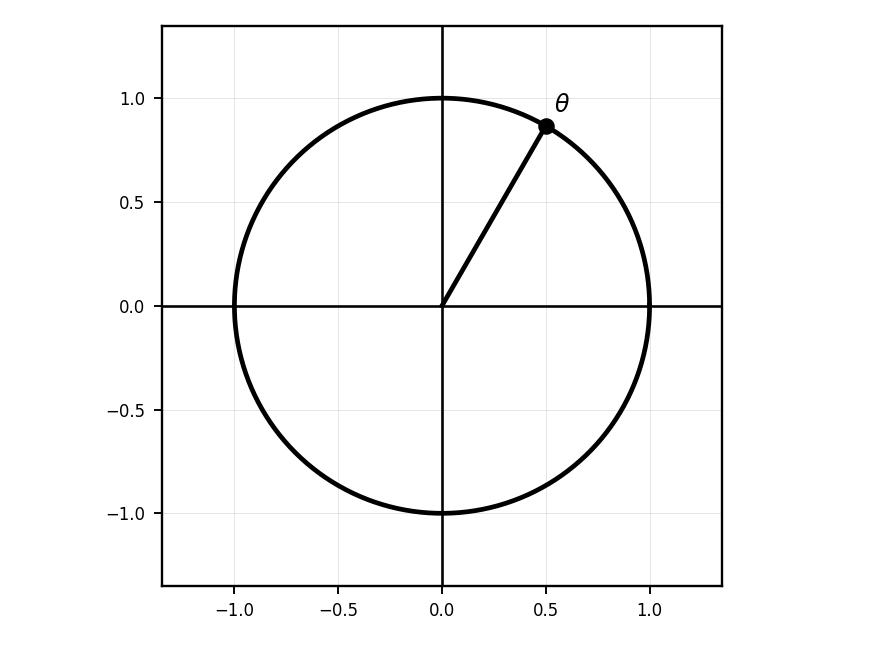
Use the unit circle to evaluate \(\sin\left(\frac{11\pi}{6}\right)\), \(\cos\left(\frac{11\pi}{6}\right)\), and \(\tan\left(\frac{11\pi}{6}\right)\).
Evaluate exactly: \[\sin\left(\frac{13\pi}{6}\right)\]
Explain why the answer matches another special angle.
Evaluate exactly: \[\cos\left(-\frac{7\pi}{4}\right)\]
Evaluate exactly: \[\tan\left(\frac{9\pi}{4}\right)\]
A point on the unit circle has coordinates \(\left(-\frac{\sqrt3}{2},\frac12\right)\). Determine \(\sin(\theta)\), \(\cos(\theta)\), \(\tan(\theta)\), and the angle \(\theta\).
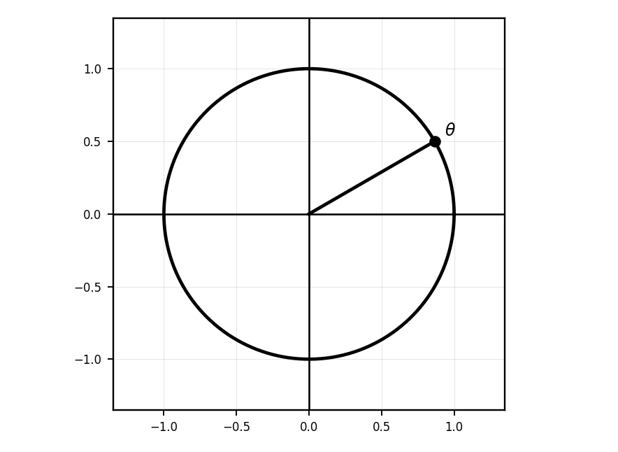
A point on the unit circle has coordinates \(\left(\frac{\sqrt2}{2},-\frac{\sqrt2}{2}\right)\). Determine all six trig functions.
Use a \(45^\circ-45^\circ-90^\circ\) triangle to explain why \(\sin\left(\frac{\pi}{4}\right)=\frac{\sqrt2}{2}\).
Use a \(30^\circ-60^\circ-90^\circ\) triangle to explain why \(\cos\left(\frac{\pi}{3}\right)=\frac12\).
Determine all angles in \(0\le\theta<2\pi\) such that \(\sin(\theta)=\frac12\).
Determine all angles in \(0\le\theta<2\pi\) such that \(\cos(\theta)=-\frac{\sqrt2}{2}\).
Determine all angles in \(0\le\theta<2\pi\) such that \(\tan(\theta)=\sqrt3\).
A student says, “\(\sin(\theta)\) and \(\cos(\theta)\) are always positive on the unit circle.” Use examples and the unit circle to explain why this is false.
Use the unit circle to explain why \(\tan(\theta)=\frac{\sin(\theta)}{\cos(\theta)}\).
Simplify: \[\frac{1-\cos^2(x)}{\sin(x)}\]
Simplify: \[\frac{\sec^2(x)-1}{\tan(x)}\]
Simplify: \[(\sin(x)+\cos(x))^2\]
Simplify: \[(\sin(x)-\cos(x))^2\]
Rewrite \(\sin(x)\cos(x)\) using a double-angle identity.
Evaluate exactly: \[\sin(105^\circ)\]
Evaluate exactly: \[\cos(105^\circ)\]
Evaluate exactly: \[\tan(75^\circ)\]
Use sum/difference identities to evaluate \(\sin\left(\frac{5\pi}{12}\right)\).
Use sum/difference identities to evaluate \(\cos\left(\frac{7\pi}{12}\right)\).
Rewrite \(\cos(A)\cos(B)-\sin(A)\sin(B)\) as a single trig function.
Rewrite \(\sin(A)\cos(B)+\cos(A)\sin(B)\) as a single trig function.
Simplify: \[\frac{\cos(x)}{\sec(x)}+\frac{\sin(x)}{\csc(x)}\]
Verify: \[\frac{1-\cos^2(x)}{\sin(x)}=\sin(x)\]
Verify: \[\frac{\tan(x)\cos(x)}{\sin(x)}=1\]
Rewrite \(4\sin(x)\cos(x)\) as a single trig function.
Rewrite \(8\sin(x)\cos(x)\) using double-angle identities.
Simplify: \[\sin^2(x)-\cos^2(x)\]
Rewrite \(\cos^2(x)\) using a half-angle identity.
Rewrite \(\sin^2(x)\) using a half-angle identity.
Evaluate \(\sin(90^\circ)\) using a double-angle identity.
Evaluate \(\cos(120^\circ)\) using a double-angle identity.
Evaluate exactly: \[\sin\left(\frac{\pi}{12}\right)\]
Evaluate exactly: \[\cos\left(\frac{\pi}{12}\right)\]
Evaluate exactly: \[\tan\left(\frac{\pi}{8}\right)\]
Use a half-angle identity to determine \(\cos(15^\circ)\).
Use a half-angle identity to determine \(\sin(15^\circ)\).
Verify: \[2\sin(x)\cos(x)=\sin(2x)\]
Verify: \[1-2\sin^2(x)=\cos(2x)\]
Rewrite \(\sin^2(x)\cos^2(x)\) using double-angle identities.
Graph \(y=2\sin(x)\). State amplitude, period, midline, maximum, and minimum.
Graph \(y=-3\cos(x)\). Describe the reflection and vertical stretch.
Graph \(y=\sin(x)+4\). State the vertical shift and midline.
Graph \(y=\cos\left(x-\frac{\pi}{2}\right)\). State the phase shift and list the five key points for one period.
Graph \(y=2\sin(2x)\). State amplitude, period, interval length between key points, and five key points.
Graph \(y=-\cos\left(\frac{x}{2}\right)\). State the period and describe the reflection.
Graph \(y=3\cos(x+\pi)-1\). State amplitude, period, phase shift, vertical shift, and midline.
Use the five-point method to graph \(y=2\sin\left(x-\frac{\pi}{4}\right)+1\). Label the five key points.
Use the five-point method to graph \(y=-4\cos(2x)-3\). Label the five key points and the midline.
Write an equation for a sine graph with amplitude \(3\), period \(2\pi\), and vertical shift \(1\). Then identify the maximum and minimum values.
Write an equation for a cosine graph with amplitude \(2\), period \(\pi\), and reflection across the \(x\)-axis. Then state the value of \(B\) in \(y=a\cos(Bx)+d\).
A graph has maximum \(5\) and minimum \(-1\). Determine the amplitude and midline. Then write a possible sine equation with period \(2\pi\).
A graph completes one cycle over \(0\le x\le\pi\). Determine the period and the value of \(B\) in \(y=\sin(Bx)\).
Given the trig graph, determine amplitude, period, phase shift, vertical shift, maximum, and minimum.
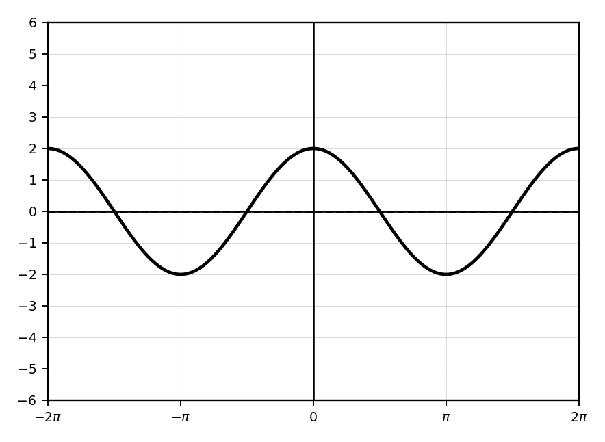
Given the trig graph, write a possible equation in cosine form. Then explain how the graph shows the amplitude, period, shift, and reflection.

Solve $2\sin(x)-1=0$ on $0\le x<2\pi$.
Solve $2\cos(x)+\sqrt3=0$ on $0\le x<2\pi$.
Solve $3\tan(x)=\sqrt3$ on $0\le x<2\pi$.
Solve $2\sin^2(x)-1=0$ on $0\le x<2\pi$.
Solve $2\cos^2(x)+\cos(x)-1=0$ on $0\le x<2\pi$.
Solve $\sin(x)\cos(x)=0$ on $0\le x<2\pi$.
Solve $\cos(x)(2\sin(x)+1)=0$ on $0\le x<2\pi$.
Solve $\sin(2x)=0$ on $0\le x<2\pi$.
Solve $\sin(2x)=\frac{\sqrt3}{2}$ on $0\le x<2\pi$.
Solve $\cos(2x)=\frac12$ on $0\le x<2\pi$.
Solve $\tan(2x)=-1$ on $0\le x<2\pi$.
Use the graph to solve $2\sin(x)-1=0$ and verify algebraically.

Use the graph to solve $\cos(x)=\sin(x)$.

A student gives only $x=\frac{\pi}{3}$ for $2\cos(x)=1$. Explain the error and give all solutions.
Solve $2\sin(x)-\sqrt2=0$ for all real $x$.
Explain why \(\sin^2(\theta)+\cos^2(\theta)=1\) for every point on the unit circle.
Compare \(\sin\left(\frac{\pi}{6}\right)\) and \(\cos\left(\frac{\pi}{3}\right)\). Explain why the values are equal geometrically.
A student says, “Angles bigger than \(2\pi\) are not on the unit circle.” Respond with examples and reasoning.

Explain why \(\sin(-\theta)=-\sin(\theta)\) using unit-circle symmetry.
Explain why \(\cos(-\theta)=\cos(\theta)\) using unit-circle symmetry.
Compare the signs of sine, cosine, and tangent in all four quadrants. Then explain how the unit circle helps predict trig values without memorization.
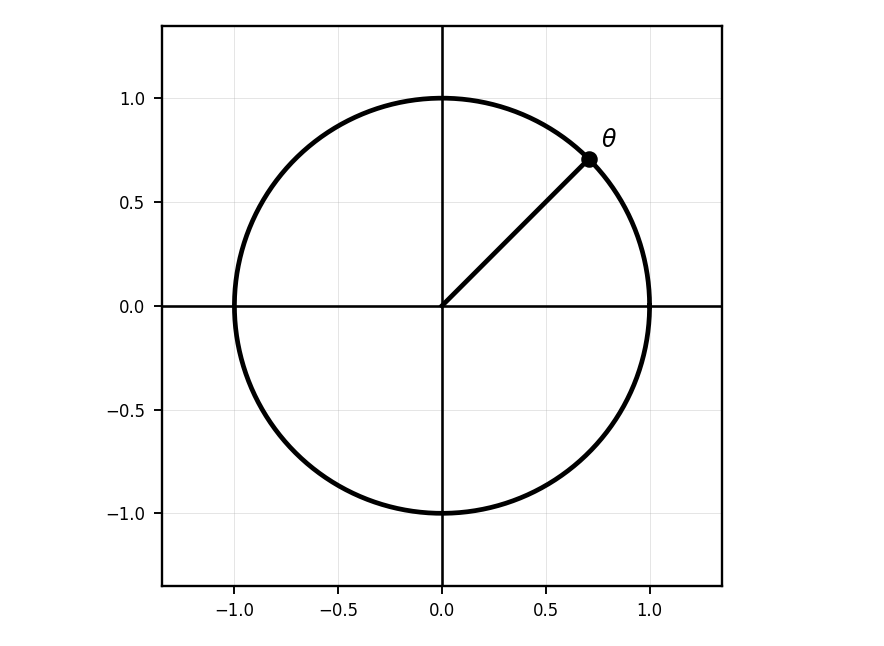
A student evaluates \(\tan\left(\frac{\pi}{2}\right)=1\).
- Explain the mistake.
- Determine the correct value.
- Explain geometrically why tangent is undefined there.
Use the unit circle to explain why \(\sin\left(\frac{5\pi}{6}\right)=\sin\left(\frac{\pi}{6}\right)\), but \(\cos\left(\frac{5\pi}{6}\right)\ne\cos\left(\frac{\pi}{6}\right)\).
A point on the unit circle has \(\sin(\theta)=\frac35\) and lies in Quadrant II. Determine \(\cos(\theta)\) and \(\tan(\theta)\). Explain how you know the signs.
Explain how the unit circle connects radians, coordinates, triangles, trigonometric functions, and graph behavior.
Explain why \(\sin^2(\theta)+\cos^2(\theta)=1\) is true geometrically using the unit circle.
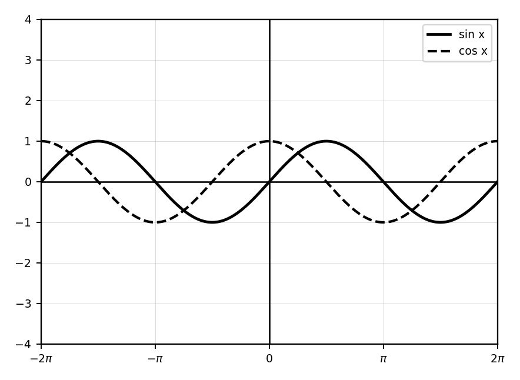
A student claims \(\sin(A+B)=\sin(A)+\sin(B)\). Use exact values to show why this is false.
Verify: \[\frac{\sec(x)-1}{1-\cos(x)}=\sec(x)\]
Explain each major step.
Verify: \[\frac{\csc(x)-\cot(x)}{\sin(x)}=\frac{1}{1+\cos(x)}\]
A student simplifies \(\sin^2(x)+\cos^2(x)\) as \((\sin(x)+\cos(x))^2\).
- Explain the mistake.
- Expand the incorrect expression.
- Compare the two results.
Explain why \(\sin(75^\circ)=\cos(15^\circ)\) using cofunction relationships, a unit-circle diagram, and graph behavior.
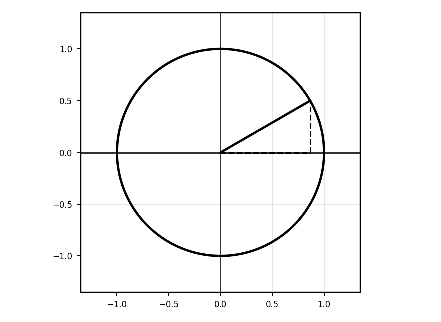
Verify: \[\frac{\tan(x)}{\sec(x)}=\sin(x)\]
Use identities to rewrite \(\sin^2(x)-\cos^2(x)\) in two different forms.
A student says, “Pythagorean identities only work with sine and cosine.” Respond using examples.
Compare \(\sin(A+B)\) and \(\sin(A-B)\). Explain structurally how the formulas are similar and different.
Verify: \[\frac{1+\tan^2(x)}{\sec^2(x)}=1\]
Use exact values and identities to prove: \[\sin(15^\circ)=\frac{\sqrt6-\sqrt2}{4}\]
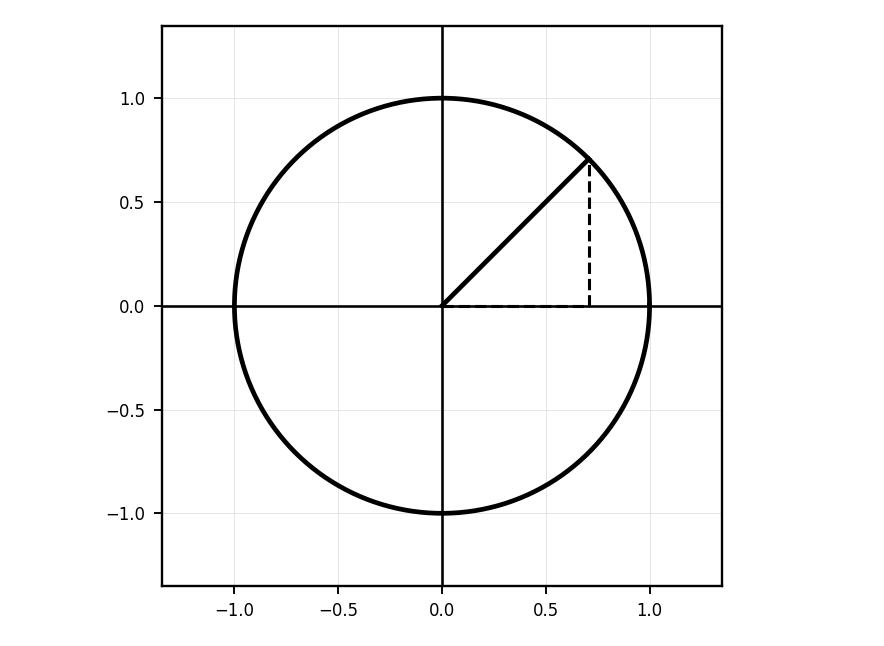
Explain geometrically why \(\sin(2x)=2\sin(x)\cos(x)\).
A student claims \(\cos(2x)=\cos^2(x)+\sin^2(x)\).
- Explain the mistake.
- State the correct identity.
- Show why the student’s result simplifies incorrectly.
Verify: \[\frac{1-\cos(2x)}{2}=\sin^2(x)\]
Explain each step.
Verify: \[\frac{1+\cos(2x)}{2}=\cos^2(x)\]
Explain why half-angle identities require \(\pm\) in front of the square root.
Determine \(\sin\left(\frac{x}{2}\right)\) given \(\cos(x)=\frac35\) and \(\pi
Determine \(\cos\left(\frac{x}{2}\right)\) given \(\sin(x)=-\frac45\) and \(\pi
Use identities to rewrite \(\sin^4(x)-\cos^4(x)\) in a simpler form.
A student says, “Double-angle identities are just shortcuts and do not reveal anything important.” Respond using examples involving graph structure and exact values.
Compare \(\cos(2x)\) written as \(\cos^2(x)-\sin^2(x)\) and as \(1-2\sin^2(x)\). Explain when each form is strategically useful.
Use identities to prove \(\sin(75^\circ)=\frac{\sqrt6+\sqrt2}{4}\).

Use graph behavior to explain how \(\sin(x)\) and \(\sin(2x)\) are related. Discuss period, symmetry, zeros, and amplitude.

Explain how amplitude affects the graph of \(y=a\sin(x)\). Include what changes and what does not change.
Explain how the coefficient inside the function affects period. Compare \(\sin(x)\) and \(\sin(3x)\), and describe how many cycles occur on \(0\le x\le2\pi\).
A student says, “The graph of \(y=\sin(x-2)\) shifts left 2.” Explain the mistake and correct it.
Compare \(y=\sin(x)\) and \(y=\cos(x)\). Explain how the graphs are related using phase shift, unit-circle coordinates, and key points.
A student says, “Amplitude changes the period.” Use two equations and graph-feature reasoning to explain why this is false.
Analyze \(y=-2\sin\left(\frac{x}{2}\right)+3\). State amplitude, period, phase shift, vertical shift, midline, maxima/minima, and intervals of increase/decrease over one cycle.
Analyze \(y=4\cos(3x-\pi)-1\). Rewrite it to reveal the phase shift, then state amplitude, period, phase shift, vertical shift, midline, and maxima/minima.
Given the graph, write one sine equation and one cosine equation that model the graph. Justify why both equations produce the same curve.
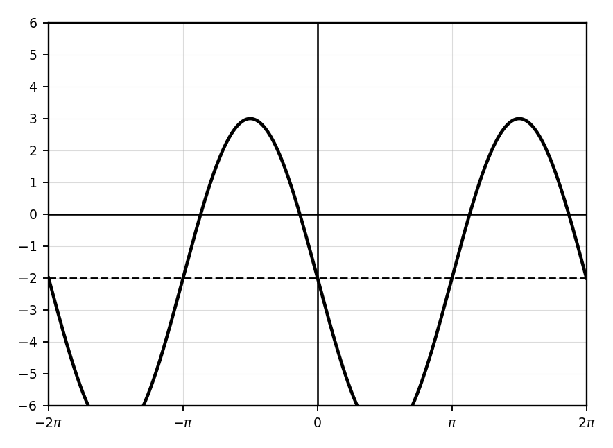
Explain why \(y=\sin(x)\) and \(y=\cos\left(x-\frac{\pi}{2}\right)\) represent the same graph. Use both key points and phase-shift reasoning.
Compare \(y=\sin(x)\) and \(y=\sin(2x)\). Discuss period, zeros, horizontal compression, number of cycles, and symmetry.
A graph has amplitude \(5\), midline \(y=-2\), and period \(4\pi\). Write a possible sine equation and a possible cosine equation. Justify both choices.
Explain how the five-point method helps graph sinusoidal functions efficiently. Use \(y=-3\cos(2x)+1\) as an example and describe how each key point is transformed.
Explain why $\sin(x)=\frac12$ has two solutions on $0\le x<2\pi$.
Explain why inverse trig functions do not automatically give all solutions.
Solve $2\sin^2(x)+\sin(x)-1=0$ on $0\le x<2\pi$ using substitution.
Solve $2\cos^2(x)-3\cos(x)+1=0$ on $0\le x<2\pi$.
Solve $\sin(x)=\cos(x)$ and explain geometrically why the solutions occur.
Use identities to solve $1-\cos^2(x)=\frac34$.
Use identities to solve $2\sin(x)\cos(x)=1$.
Explain why $\tan(x)=0$ has infinitely many solutions.
Compare solving $\sin(x)=\frac12$ and $\sin(2x)=\frac12$.
Explain how graphing verifies trig equation solutions.
Solve $\sin^2(x)-\cos^2(x)=0$ using identities.
Explain why $\sin(x)=2$ has no real solution.
Create an angle whose sine is positive, cosine is negative, and tangent is negative. Then sketch it, give one radian measure, and explain how you know the signs.
Create a unit-circle problem where students must determine all six trig functions from one coordinate. Then solve your own problem.
Design an error-analysis problem involving coterminal angles.
- Write incorrect student work.
- Identify the misconception.
- Correct the work.
- Explain how to avoid the error.
Create a real-world periodic situation where radians are more useful than degrees. Explain why.
Design a unit-circle puzzle involving coterminal angles, exact values, and quadrant reasoning. Then provide the solution.
Create a comparison task between \(\sin(\theta)\) and \(\cos(\theta)\) where students must use geometry and symmetry to justify relationships.
A student claims, “Memorizing the unit circle is enough to understand trigonometry.” Critique this statement using examples involving coordinates, symmetry, and graph behavior.
Create a graph/unit-circle connection problem where students relate a point on the unit circle, sine/cosine values, and a point on a trig graph. Explain the connection.
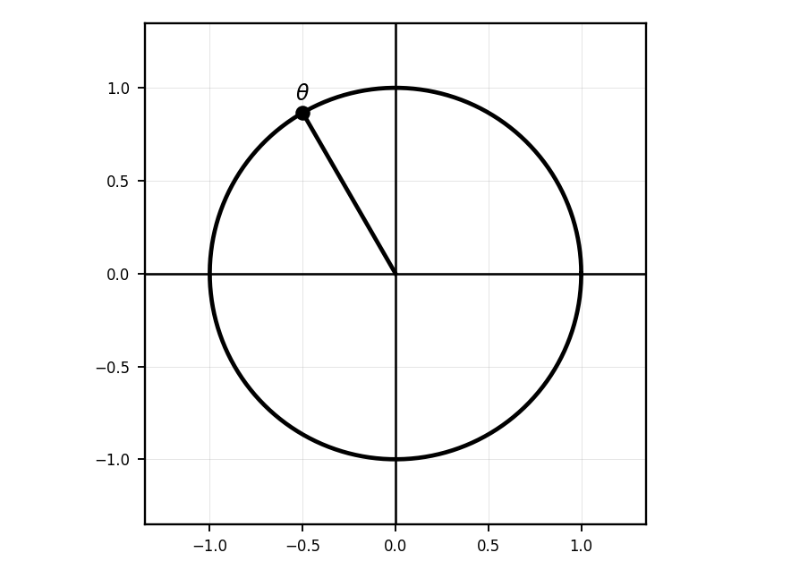
Create a multi-representation problem involving radians, coordinates, trig values, and special triangles. Then solve it completely.
Design a challenge problem involving exact trig values, coterminal angles, symmetry, and all four quadrants. Then provide a full justification.
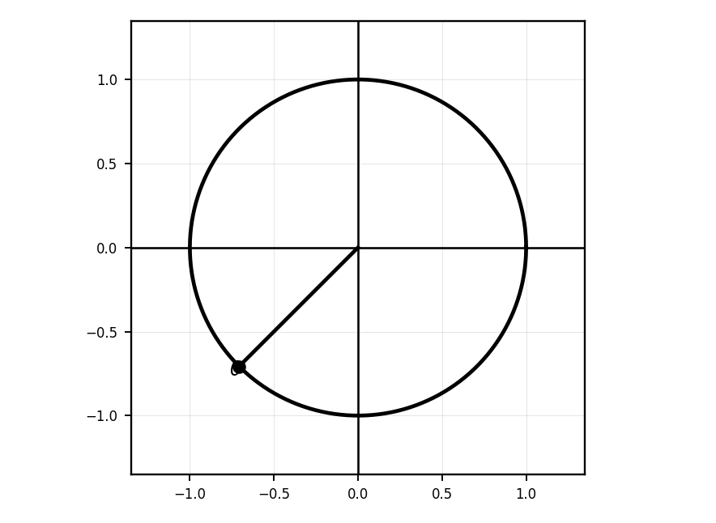
Create a trigonometric identity that simplifies to \(1\). Your identity must use at least two of the following: reciprocal identities, quotient identities, or Pythagorean identities. Then verify it line by line and explain why each rewrite is valid.
Create a sum/difference identity problem whose exact answer contains radicals. Use angles that are not basic unit-circle angles by themselves, such as \(15^\circ\), \(75^\circ\), \(\frac{5\pi}{12}\), or \(\frac{7\pi}{12}\). Then solve it exactly.
Design an error-analysis problem involving \(\sin(A+B)\).
- Write incorrect student work that treats sine as if it distributes over addition.
- Identify the misconception.
- Correct the work using the sum identity.
- Explain how to test the error using special angles.
Create a trig expression that can be simplified in two different valid ways. One method should use a Pythagorean identity and the other should use quotient or reciprocal identities. Show both approaches and explain which is more efficient.
Create a real-world periodic scenario where two shifted sinusoidal quantities are combined. Write an expression using a sum or difference identity to simplify or interpret the model, then explain what the simplified expression means in context.
Design a challenge problem involving exact trig values, sum/difference identities, radicals, and unit-circle reasoning. Your problem must require decomposing an angle into two special angles. Then solve it completely.

Create a comparison task involving \(\sin(A+B)\) and \(\cos(A+B)\). Include two specific angle pairs, ask students to compute both expressions, and require a written comparison of how the formulas are structurally similar and different.
Create a multi-representation problem involving unit-circle coordinates, identities, exact values, and graph behavior. Use a specific angle such as \(\frac{5\pi}{12}\). Require students to:
- write it as a sum or difference of special angles,
- find exact sine and cosine values,
- locate the corresponding unit-circle point,
- explain how those values appear on sine and cosine graphs.
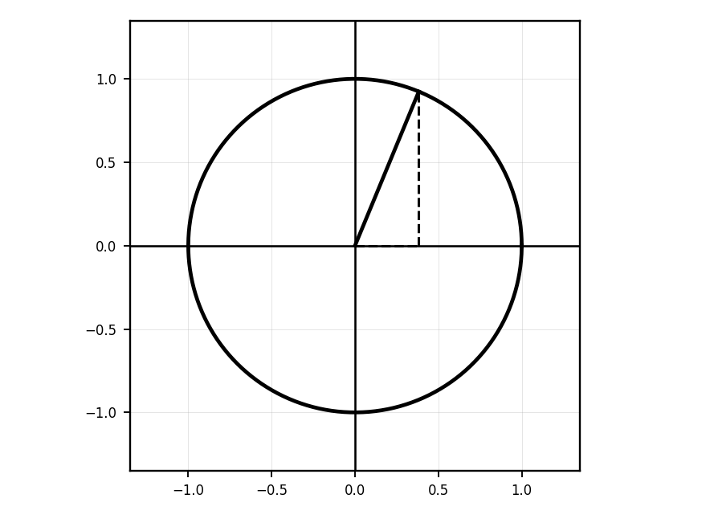
A student claims, “Memorizing identities is enough to understand trigonometry.” Critique this statement using one example from geometry, one from graph behavior, and one from exact-value calculation.
Create a verification problem that requires multiple identities, strategic rewriting, and careful algebra. Your identity must include at least one reciprocal function and one Pythagorean identity. Then provide a full justification.
Create and solve a verification problem that requires both a double-angle identity and a Pythagorean identity. Your identity must begin with an expression involving \(\sin^2(x)\), \(\cos^2(x)\), and \(\sin(2x)\), and it must simplify to a single trig function. Show every step and explain why each rewrite is valid.
Create a half-angle problem where quadrant reasoning matters. Choose an angle \(x\) such that \(\cos(x)\) is known and \(\frac{x}{2}\) lies in a different quadrant than \(x\). Ask for \(\sin\left(\frac{x}{2}\right)\) or \(\cos\left(\frac{x}{2}\right)\), then solve it fully with exact values and a sign explanation.
Design an error-analysis problem involving \(\cos(2x)\).
- Write incorrect student work that uses \(\cos(2x)=\cos^2(x)+\sin^2(x)\).
- Identify the misconception.
- Correct the identity.
- Test both expressions using \(x=45^\circ\).
Create a problem where \(\sin(2x)\) must be used to simplify a complicated expression. The original expression should include a product \(\sin(x)\cos(x)\). Solve it in two ways: first by using the double-angle identity early, and second by expanding or substituting first. Compare the efficiency.
Design a real-world periodic scenario where doubling the angle changes the frequency of oscillation. Write two models, one using \(\sin(x)\) and one using \(\sin(2x)\), then explain how the graphs differ in period, zeros, and number of cycles over the same interval.
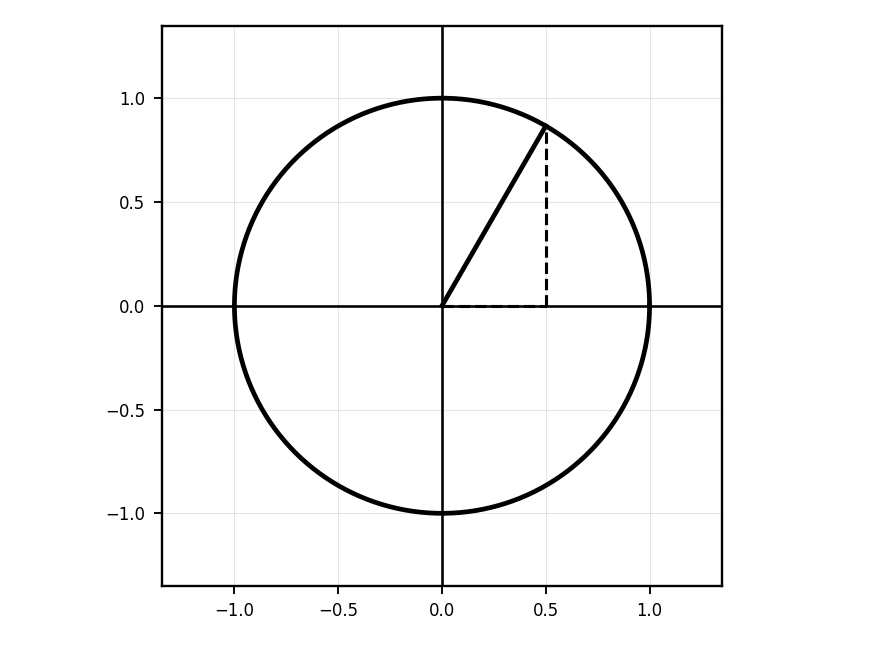
Create a specific challenge problem involving exact trig values, half-angle identities, radicals, and unit-circle reasoning. Use the angle \(\frac{\pi}{8}\) or \(\frac{3\pi}{8}\). Require students to determine both sine and cosine exactly, justify the signs using the unit circle, and simplify the radicals as much as possible.

Create a comparison task involving \(\sin(2x)\) and \(\cos(2x)\). Include a graph, two identities for each function, and prompts asking students to compare zeros, symmetry, period, and which identity form is most useful for solving equations.

Create a multi-representation problem involving unit-circle coordinates, half-angle identities, exact values, and graph behavior. Use an angle such as \(\frac{3\pi}{4}\) and ask students to find exact values for \(\sin\left(\frac{3\pi}{8}\right)\) and \(\cos\left(\frac{3\pi}{8}\right)\), justify signs geometrically, and explain where those values appear on sine and cosine graphs.
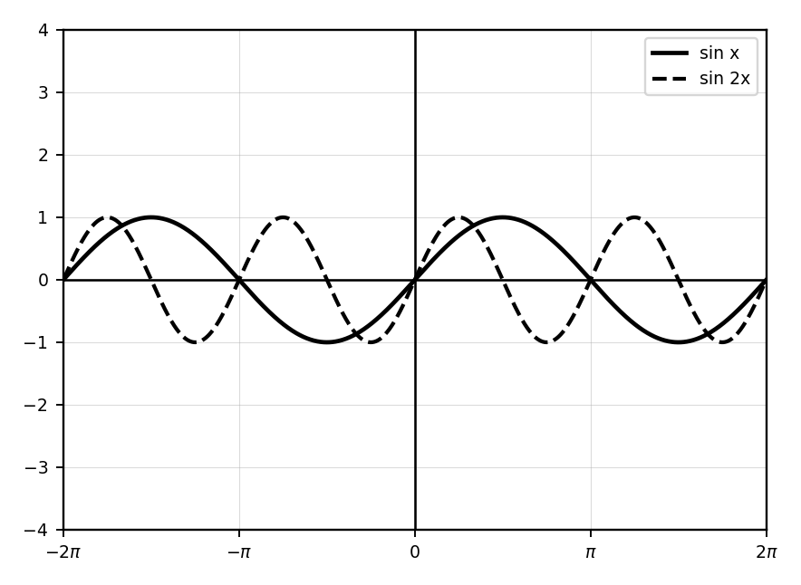
A student claims, “Half-angle identities are just memorization.” Critique this statement using one example involving geometry, one involving exact values, one involving graph reasoning, and one involving strategic simplification.
Create a verification problem requiring multiple identities, careful algebra, strategic substitution, and exact-value reasoning. Your problem must use at least one double-angle identity, one half-angle identity, and one known unit-circle value. Then provide a full justification.
Create a sine function with amplitude \(4\), period \(\pi\), phase shift right \(\frac{\pi}{2}\), and vertical shift down \(3\). Write the equation in transformed form, determine the five key points for one full cycle, and explain how each parameter affects the graph.
Create a cosine graph whose maximum is \(7\), minimum is \(-1\), and period is \(2\pi\). Write the equation, identify the amplitude and midline from the max/min values, and justify how the graph matches every condition.
Design an error-analysis problem involving phase shift for \(y=2\sin(3x-\pi)+1\).
- Write incorrect student work that identifies the phase shift as \(\pi\).
- Identify the misconception.
- Rewrite the equation to reveal the correct phase shift.
- Explain how to check the shift using key points.
Use the graph shown to create two equations that model the same curve: one in sine form and one in cosine form. Then explain why both equations work by comparing starting point, phase shift, midline, and maximum/minimum values.
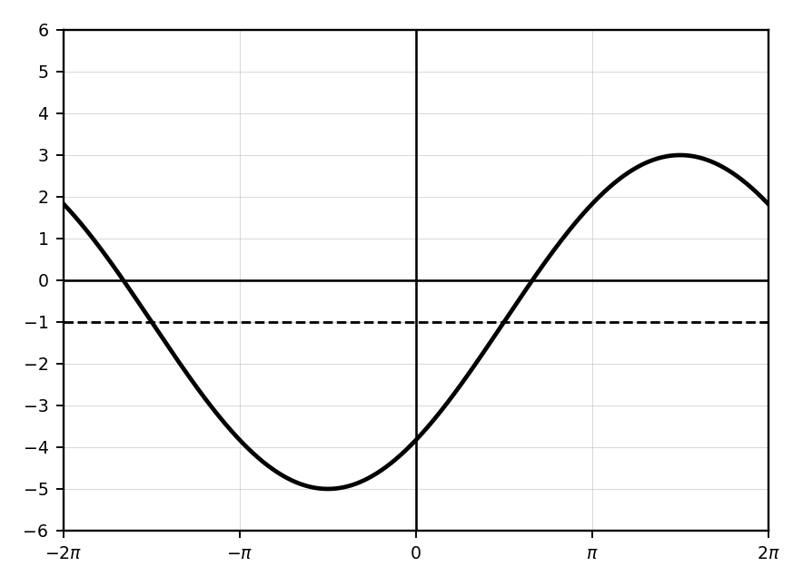
Design a real-world periodic situation involving temperature, tides, breathing, or circular motion. The situation must have amplitude \(6\), period \(12\), and midline \(20\). Write a sinusoidal model, interpret each parameter in context, and explain what one full cycle represents.
Create a challenge problem involving a transformed sine or cosine graph with amplitude \(3\), vertical shift \(-2\), period \(\frac{2\pi}{5}\), and a nonzero phase shift. Ask students to graph two cycles, write the five key points for one cycle, and identify all maxima and minima shown.
Create a comparison task involving \(y=\sin(x)\) and \(y=\cos(x)\). Require students to compare phase shift, symmetry, zeros, maxima, minima, and unit-circle meaning. Include at least one prompt asking students to explain why cosine can be written as a shifted sine function.
Create a multi-representation problem using the graph shown. Include the equation \(y=4\sin\left(\frac12(x-\pi)\right)-1\), a table of key values, and the graph. Require students to determine amplitude, period, phase shift, vertical shift, maxima/minima, and explain how the table and graph agree.
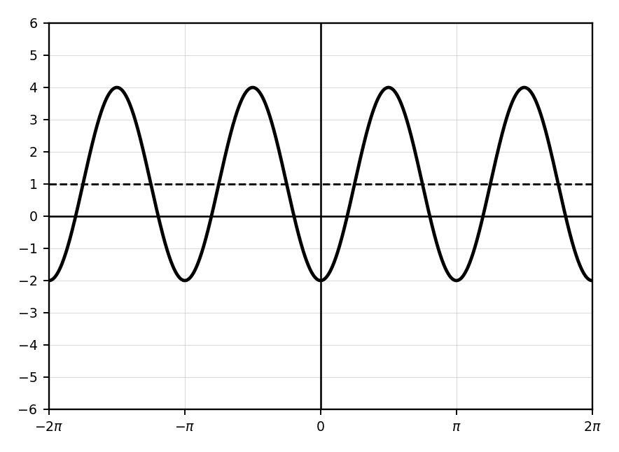
A student claims, “Graphing trig functions is just memorizing shapes.” Critique this statement using transformations, periodic behavior, unit-circle reasoning, and graph structure. Include at least two equations in your response to support the critique.
Create a modeling problem where a sinusoidal function describes daylight hours over a year, tide height, sound waves, or circular motion. Your task must include a graph, a model equation, interpretation of amplitude/period/midline/phase shift, a prediction using the model, and a justification of whether the prediction is reasonable.
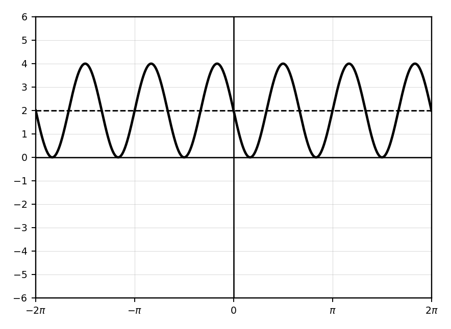
Solve $2\sin(x)-1=0$ on $0\le x<2\pi$. Then verify graphically, identify the corresponding unit-circle coordinates, and explain why exactly two solutions occur.
Solve $2\sin^2(x)+\sin(x)-1=0$ for $0\le x<2\pi$. Use substitution, verify graphically, and explain why one trig value creates two angle solutions.
A student solves $2\cos(x)=1$ and gives only $x=\frac{\pi}{3}$. Explain the error, find all solutions on $0\le x<2\pi$, and justify geometrically why another solution exists.
Solve $\tan(x)=\sqrt3$ for all real $x$. Explain why the solutions repeat every $\pi$ and compare this repetition to sine and cosine periodicity.
The height of a rider on a Ferris wheel is modeled by $h(t)=4\sin(t)+6$. Determine when the rider is at height $8$ during one cycle, interpret both solutions, and explain how graph behavior verifies them.

Solve $2\sin(x)\cos(x)=1$ on $0\le x<2\pi$. Rewrite using a double-angle identity, solve algebraically, and verify graphically.
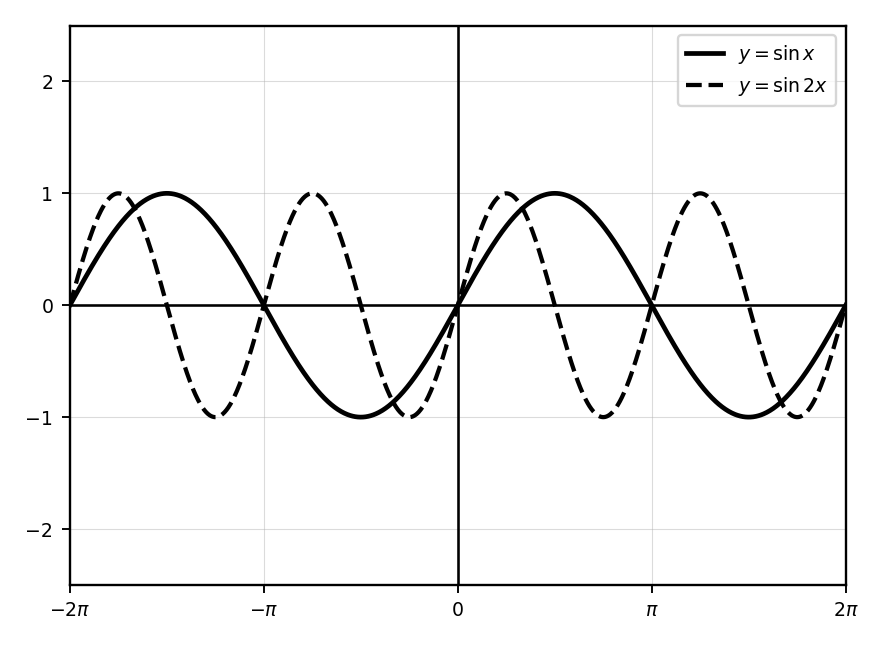
Compare solving $\sin(x)=\frac12$ and $\tan(x)=1$ on $0\le x<2\pi$. Compare the number of solutions, periodicity, and unit-circle structure.
Solve $2\cos(x)-1=0$. Solve algebraically, verify graphically, locate all solutions on the unit circle, and explain how all representations confirm the same answers.
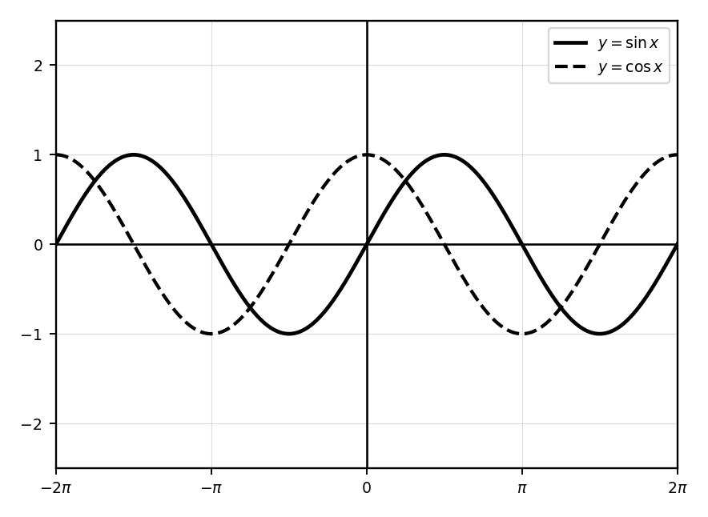
Solve $\sin(2x)=\frac{\sqrt3}{2}$ on $0\le x<2\pi$. Explain why doubling the angle changes the number of solutions and compare to solving $\sin(x)=\frac{\sqrt3}{2}$.

Solve $\sin^2(x)-\cos^2(x)=0$ on $0\le x<2\pi$. Rewrite using identities, solve using at least two methods, verify graphically, and explain why no other solutions exist.
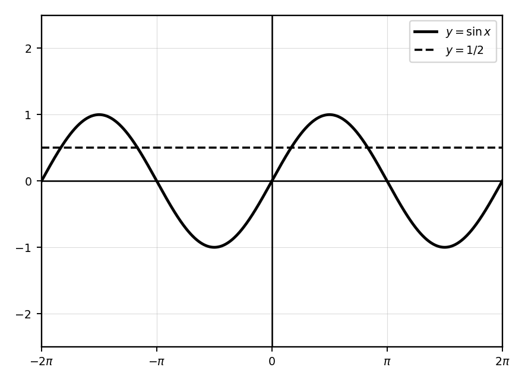